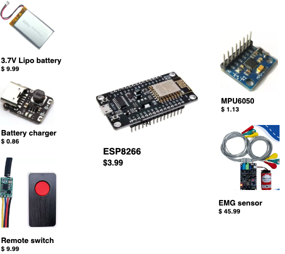
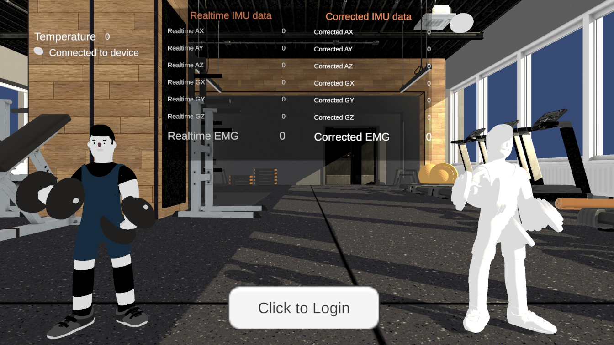
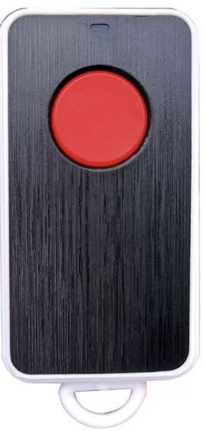

This Smart Fitness Vest is a wearable device styled as a vest, is built by an ESP8266 module, a battery and a switch, is embedded with three Inertial Measurement Units (IMUs) and an Electromyography (EMG) sensor.

ESP8266:
This is a microcontroller unit (MCU) with integrated Wi-Fi capabilities. It acts as the brain of the vest, processing data collected from sensors and managing wireless communication.
The ESP8266 sends data to the cloud for further analysis and retrieves feedback for real-time interaction with the user.
MPU6050:
This is a sensor module containing both an accelerometer and a gyroscope.
Three of these sensors are used in the vest to monitor and measure the body's movements and orientations.
This detailed motion tracking allows the system to accurately analyze workout performance, specifically tracking movements related to elbow flexion.
EMG (Electromyography) Sensor:
This sensor is used to measure electrical activity produced by skeletal muscles.
In the vest, it is placed on muscles such as the biceps to monitor muscle exertion during exercises, helping to evaluate the intensity of muscle use and to ensure exercises are performed correctly.
Lipo Battery + Charger module:
A lightweight lithium polymer battery powers the entire system.
Rechargeable nature and its ability to provide a high energy density, which is crucial for maintaining the vest's long-term usability and portability.
Wireless Switch:
This component allows the user to turn the device on and off without physical wires.
It enhances the ease of use and accessibility of the vest, making it user-friendly for daily workouts.
The bicep movements data collected during elbow flexions is stored in a cloud database for processing and used in training deep learning models for real-time movement classification, then by providing instant feedback and correcting postures through its app interface via board and models to act as a personal coach in real life.

How to Use the Smart Fitness Vest
Wear the vest and secure the two IMU sensors at the upper torso using the elastic bands on the vest.
Strap another IMU sensor to the arm that will perform the elbow flexion.
Attach the EMG sensor electrodes to your biceps brachii or any muscle you wish to measure:
Place the yellow electrode where the muscle exertion is strongest.
Place the green electrode next to the yellow one.
Place the red electrode where the muscle exertion is weakest.
Ensure the device is worn properly and press the red button to turn on the devive, then connected to Wi-Fi.

Launch the application to start monitoring your movements and receive real-time feedback and posture correction.
Video Demonstration
Click the link to download the Unity APP to try smart vest app